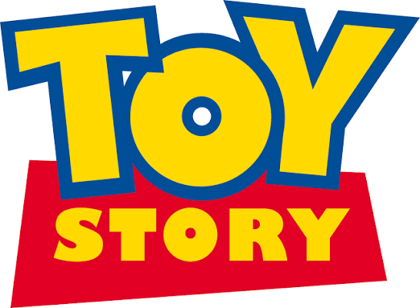

Donde la magia cobra vida
¡BIENVENIDOS AL MUNDO MAGICO DE DISNEY! aca podras encontrar las peliculas mas queridas de toda la vida, llenas de diversion, amistad y sueños. Explora nuestras historias y disfruta de momentos inolvidables junto tus personajes favoritos
Esta pagina esta dedicada a las pelis de disney nuestro objetivo es que todos puedan disfrutar de las peliculas y discubrir nuevas historias magicas

frozen
Frozen es una película animada de Disney de 2013 centrada en las hermanas Elsa, con poderes de hielo incontrolables, y Anna, quien emprende un viaje para salvar su reino de un invierno eterno. Esta historia de amor fraternal y aceptación presenta personajes entrañables como Olaf y Kristoff, destacando el coraje para enfrentar los miedos propios.

Enredados
Enredados narra la historia de la princesa Rapunzel, quien escapa de su torre con ayuda del ladrón Flynn Rider para descubrir su origen y ver las luces flotantes. Esta aventura de Disney destaca por la búsqueda de libertad, el romance y la comedia durante su viaje.

Toystory
Toy Story (1995) es una innovadora película de animación de Pixar que narra la rivalidad y eventual amistad entre Woody, un vaquero de juguete tradicional, y Buzz Lightyear, un moderno astronauta. Tras quedar atrapados fuera de casa y en manos del vecino destructor de juguetes Sid, ambos deben superar sus diferencias para regresar con su dueño Andy antes de que su familia se mude.